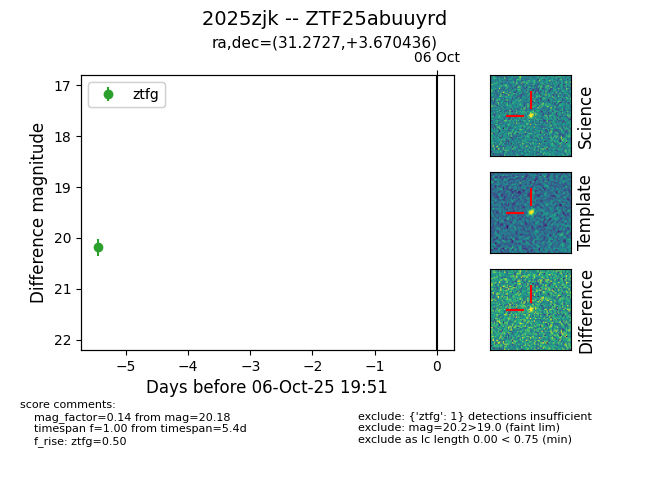

FINK: ZTF25abuuyrd
Lasair: ZTF25abuuyrd
ALeRCE: ZTF25abuuyrd
TNS: 2025zjk
YSE: 2025zjk
ZTF25abuuyrd (ztf,fink)
2025zjk (tns,yse)
equatorial (ra, dec) = (31.2727,+3.67044)
galactic (l, b) = (155.7533,-54.43935)

last ztfg=20.18
1 ztfg detections